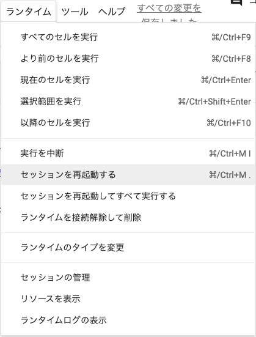

エラーが発生したときは
エラー名の確認
結果画面にエラーが表示されているので、次のポイントを確認しましょう。
①エラー名
②エラーの内容
③エラーの発生箇所

④をクリックすると、Google検索できます。
確認できたら、エラーの種類ごとに対応しましょう。ここでは、代表的な10種類のエラーについて、解決方法を紹介します。
SyntaxError
エラーの意味
構文が間違っているときに発生するエラーです。
よくある発生状況
・文字列やコメント以外で全角文字が入っている
・if文・for文・while文などでコロン:がない
・カッコ()，ダブルクォート"..."，シングルクォート'...'の閉じ忘れ
・不要なスペースが入っている
・スペースが全角になっている
など
対処方法
Pythonの構文が間違っていないか確認しましょう。
age = int(input("年齢は？"))
if age < 13
fee = 5000
else:
fee = 8400
print("入園料は" + str(fee) + "円です。")
File "xxxxxxxxxxxx", line 3
if age < 13
^
SyntaxError: invalid syntax
具体例
SyntaxError: expected ':'
・if文，for文，while文，def文などの行末にコロン(:)がない。
SyntaxError: incomplete input
・未完了の箇所がある（カッコの閉じ忘れなど）。
SyntaxError: invalid character '...'
・使用できない文字を使っている。 ・構文中に全角文字を使っている。
SyntaxError: invalid character '）' (U+FF09)
・関数などのカッコ閉じるとき全角カッコ「）」になっている。
SyntaxError: invalid decimal literal
・変数名が数字からはじまっている。 ・該当がない場合は、前後の書き方で別のエラーの可能性が高い。 ・シングルクォート(')とすべきところがバッククォート(`)になっていて、直後に数字がある。
SyntaxError: invalid syntax. Maybe you meant '==' or ':=' instead of '='?
・if文で正しい比較演算子が使われていない。 ・等しい条件式で使用する比較演算子は「==」。 「=」は代入の演算子。
SyntaxError: invalid non-printable character U+3000
・全角スペースが入ってしまっている。
SyntaxError: invalid syntax.
・Pythonのコマンドや関数の名前を打ち間違い。 ・カッコを閉じ忘れ。 ・半角スペースとすべきところが、全角スペースになっている。 ・if文，for文，while文，def文などの文末に(:)がない。 ・文字列がシングルクォート(')やダブルクォート(")で囲まれているない。 ・シングルクォート(')とすべきところがバッククォート(`)になっている。 ・SyntaxErrorの他の項目で該当するところはないか確認。
SyntaxError: Missing parentheses in call to 'print'. Did you mean print(...)?
・printのカッコの形が違う（parenthes：カッコ）。
SyntaxError: unterminated string literal
・文字列が半角クォート(')または半角ダブルクォート(")で囲まれていない。 ・全角クォート（’）や全角ダブルクォート（”）で閉じている。
IndentationError
エラーの意味
インデントが正しくないときに発生するエラーです。
よくある発生状況
・if文，for文，while文，def文の次の行頭にインデントがない。
・行頭に不要なスペースやタブが含まれている場合。
対処方法
・if文，for文，while文，def文の次の行頭に適切にインデントを追加する。
・行頭に不要なスペースがないか確認しましょう。
具体例
IndentationError: unexpected indent
・正しくないインデントがある。
IndentationError: expected an indented block after 'if' statement
・if文の次の行頭にインデントがない。
IndentationError: expected an indented block after 'for' statement
・for文の次の行頭にインデントがない。
IndentationError: expected an indented block after 'while' statement
・while文の次の行頭にインデントがない。
IndentationError: expected an indented block after 'def' statement
・def文の次の行頭にインデントがない。
NameError
エラーの意味
指定した名前の変数が存在しないときに発生するエラーです。
よくある発生状況
変数名の間違いやスペルミス（大文字・小文字も）
対処方法
変数名に間違いがないか確認しましょう。
・変数名が途中で途切れていないか（例： ×user_nam → ○user_name）
・iやl，oや0など見間違いやすいアルファベット
・rやlなど間違いやすいアルファベット（例： ×glade → ○grade）
・二重母音の順序（例： ×haedar → ○header）
・アルファベットの大文字・小文字（例： ×User_nam → ○user_name）
・キーボードで隣のキーを入力していないか（例： ×balue → ○value）
具体例
NameError: name 'xxx' is not defined
・変数xxxが定義されていない。
・定義されていない変数xxxを参照してしまっている。
・変数名にスペルミスがある（大文字・小文字は区別される）。
TypeError
エラーの意味
型に合わない操作をしたときに発生するエラーです。
よくある発生状況①
文字列と数値を組み合わせてprintするときなど
name = "海城中学高等学校"
establish = 1891
school_name = name + establish + "年"
print(school_name)
---------------------------------------------------------------------------
TypeError Traceback
2 establish = 1891
3
----> 4 school_name = name + establish + "年"
5 print(school_name)
TypeError: can only concatenate str (not "int") to str
対処方法
型に適した指定になるようにします。
name = "海城中学高等学校"
establish = 1891
school_name = name + str(establish) + "年"
print(school_name)
海城中学高等学校1891年よくある発生状況②
printなどの関数名に値を代入したあと、その関数を呼び出した場合など
例えば、誤ってprint = 5のように、printを変数として扱ってしまって、実行してしまう。
print = 5
その後、次のように正しく修正しても、一度変数として扱ってしまっているので、エラーが起こる。
print(5)
対処方法
Colaboratoryの メニュー ＞ ランタイム ＞ セッションを再起動するをクリックして、セッションを再起動し、再度実行する。
ValueError
エラーの意味
引数に渡した値が正しくないときに発生するエラーです。
よくある発生状況
int関数やfloat関数など型変換する関数
対処方法
正しい値を引数に渡す。
具体例
ValueError: invalid literal for int() with base 10: '...'
・int関数に渡された値が半角数値ではない。
・input関数でユーザーが入力した場合は、入力するときに半角で入力すること。
IndexError
エラーの意味
リスト型やタプル型において、インデックスの指定がリストの範囲を超えているときに発生するエラーです。
対処方法
要素数が正しいかどうかを確認し、正しいインデックスを指定しましょう。
KeyError
エラーの意味
辞書型において、キーを指定して要素を取得するときに、存在しないキーを指定した時に発生するエラーです。
対処方法
定義した辞書に含まれるキーが正しいかどうか、指定したキーが存在するか確認しましょう。 なお、キーの一覧を取得するkeys()メソッドを使うと、キーの一覧をリスト型で取得することができます。
ModuleNotFoundError
エラーの意味
読み込んだモジュールが見つからない場合に発生するエラーです。
対処方法
モジュール名が正しいかどうか確認しましょう。それでも解決しない場合は、モジュールがインストールされているか確認しましょう。
具体例
ModuleNotFoundError: No module named '...'
import ...のところで、モジュール名のスペルが正しいか確認しましょう。
FileNotFoundError
エラーの意味
ファイルまたはディレクトリが見つからない場合に発生するエラーです。
対処方法
ファイル・ディレクトリ名が正しいかどうか確認しましょう。
ZeroDivisionError
エラーの意味
数値演算するときに、0（ゼロ）で割り算したときに発生するエラーです。
対処方法
0（ゼロ）で割り算しないように処理を確認しましょう。
また、割る数を変数で指定している場合は、変数の代入のときに0（ゼロ）や存在しない値を代入している可能性もあります。
AttributeError
エラーの意味
オブジェクトの属性（Attribute）にアクセスできないときに発生するエラーです。属性とは、オブジェクトに存在する変数やメソッドのことです。
対処方法
オブジェクトに用意されている方法で変数にアクセスします。オブジェクト名、識別子名が正しいかどうか確認しましょう。
具体例
AttributeError: module '...' has no attribute '...'
モジュールの中の関数が正しく指定されていません。スペルに間違いがないか確認しましょう。
(誤)random.randit ⇒ (正)random.randint